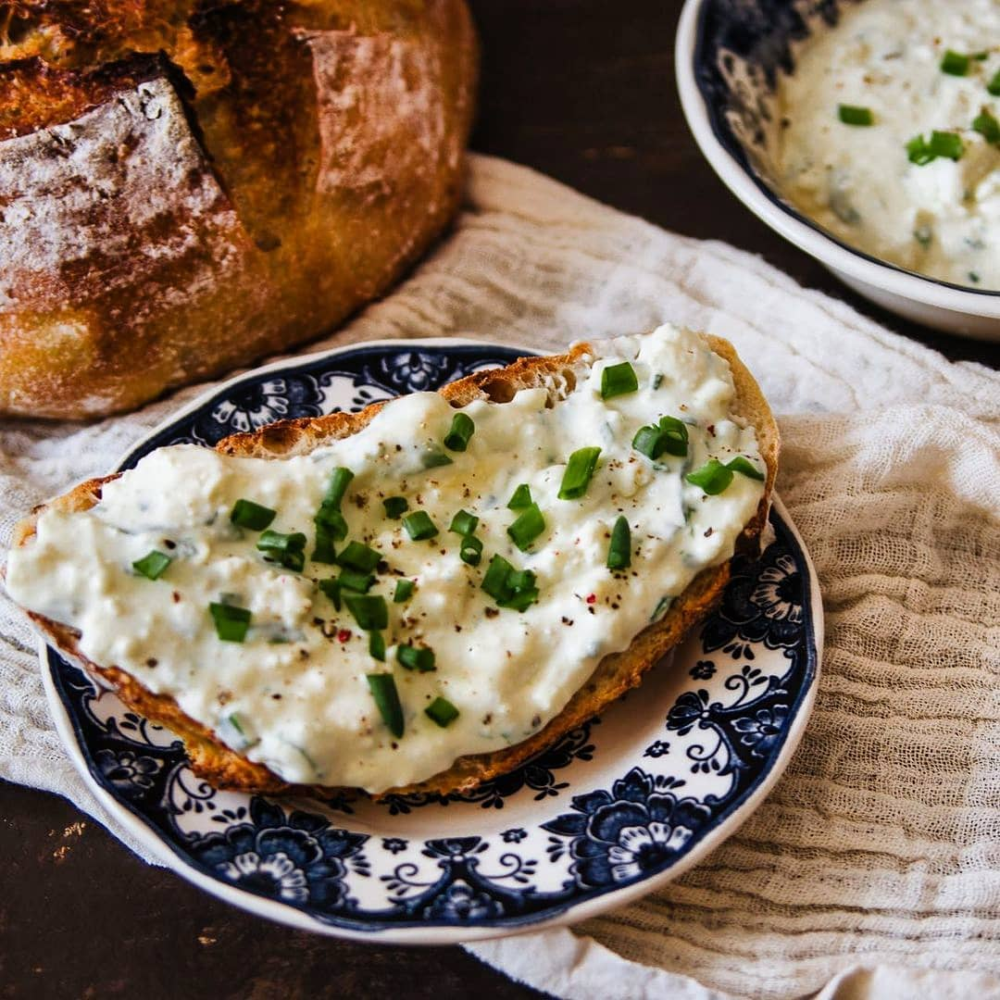

Bryndzová nátierka — Normy Jedál
Umelecké dielo našich predkov, CHLEBÍK S BRYNDZOU ❤️
V podaní @katkasgoodfood 😉👏👌
---
"Cerstvy chrumkavy zemiakovy chlebik s bryndzovou natierkou❤️ pripravene s laskou"
.
.
.
.
#dnesjem #vegetables
#foodphotography #foodphotographer #foodartblog #mojejedlo #topjedlo #foodstagram #foodgallery #foodlover #homemade #foodstylistlife #goodfoods #katkasgoodfood #food #domacejedlo#mojerecepty #fooddetails #healthyfood #london #slovakblogger #slovakia #bryndza #bryndzovanatierka #zemiakovychlebik #kvasok #brynza #bryndzoholik #slovenskonafotke #slovenskonatanieri